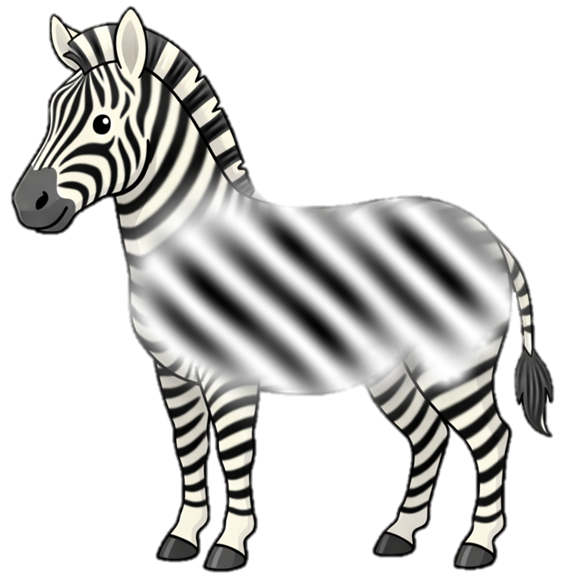
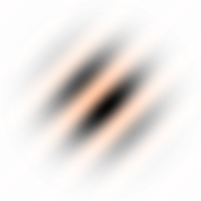

<!DOCTYPE html>
<html>
<head>
  <title>Zandstorm</title>

  <script src="https://unpkg.com/jspsych@8.2.2"></script>
  <script src="https://unpkg.com/fabric@7.1.0/dist/index.min.js"></script>

  <script src="https://unpkg.com/@jspsych/plugin-preload@2.1.0"></script>
  <script src="https://unpkg.com/@jspsych/plugin-call-function@2.1.0"></script>
  <script src="https://unpkg.com/@jspsych/plugin-html-button-response@2.1.0"></script>
  <script src="https://unpkg.com/@jspsych/plugin-html-keyboard-response@2.1.0"></script>
  <script src="https://unpkg.com/@jspsych/plugin-canvas-keyboard-response@1.1.3"></script>
  <script src="https://unpkg.com/@jspsych/plugin-canvas-button-response@2.1.0"></script>
  <script src="https://unpkg.com/@jspsych/plugin-survey-html-form@2.1.0"></script>
  <script src="https://unpkg.com/@jspsych/plugin-fullscreen@2.1.0"></script>
  <script src="https://unpkg.com/@jspsych/plugin-survey-text@2.1.0"></script>
  <script src="https://unpkg.com/@jspsych-contrib/plugin-pipe"></script>
  <script src="https://unpkg.com/@jspsych/plugin-survey-text@2.1.0"></script>

  <link href="https://unpkg.com/jspsych@8.2.2/css/jspsych.css" rel="stylesheet" type="text/css" />
  <link href="umu_exp_style.css" rel="stylesheet" type="text/css" />

</head>
<body></body>

<script>

// instellingen


///////////////////////////////////////////////
///
///
///  EXTRA STUFF 
///
///
///////////////////////////////////////////////

/////////////////

  function getContinueButton() {
    return document.querySelector(
      'button.jspsych-btn:not([disabled]), input.jspsych-btn[type="button"]:not([disabled]), input.jspsych-btn[type="submit"]:not([disabled]), input[type="submit"]:not([disabled])'
    );
  }

  document.addEventListener('keydown', function(event) {
    const active_element = document.activeElement;
    const active_tag = active_element ? active_element.tagName : '';
    const input_type = active_element && active_element.type ? active_element.type.toLowerCase() : '';
    const blocks_space_continue =
      active_tag === 'TEXTAREA' ||
      active_tag === 'SELECT' ||
      active_tag === 'BUTTON' ||
      (active_tag === 'INPUT' && !['radio', 'checkbox'].includes(input_type));
    const continue_button = getContinueButton();

    if (event.code === 'Space' && continue_button && !blocks_space_continue) {
      event.preventDefault();
      continue_button.click();
    }
  });

  function isSpaceHintTarget(element) {
    return element.matches(
      'button.jspsych-btn, input.jspsych-btn[type="button"], input.jspsych-btn[type="submit"], input[type="submit"]'
    );
  }

  function ensureSpaceHints() {
    const buttons = document.querySelectorAll(
      'button.jspsych-btn, input.jspsych-btn[type="button"], input.jspsych-btn[type="submit"], input[type="submit"]'
    );

    buttons.forEach((button) => {
      if (
        button.parentElement &&
        button.parentElement.classList.contains('jspsych-space-wrapper')
      ) {
        const existing_hint = button.parentElement.querySelector('.jspsych-space-hint');
        if (!existing_hint) {
          const hint = document.createElement('div');
          hint.className = 'jspsych-space-hint';
          hint.textContent = '<spatie>';
          button.parentElement.appendChild(hint);
        }
        return;
      }

      const wrapper = document.createElement('div');
      wrapper.className = 'jspsych-space-wrapper';
      button.insertAdjacentElement('beforebegin', wrapper);
      wrapper.appendChild(button);

      const hint = document.createElement('div');
      hint.className = 'jspsych-space-hint';
      hint.textContent = '<spatie>';
      wrapper.appendChild(hint);
    });
  }

  function setupSpaceHintObserver() {
    let update_scheduled = false;

    const scheduleHintUpdate = () => {
      if (update_scheduled) return;
      update_scheduled = true;
      window.requestAnimationFrame(() => {
        update_scheduled = false;
        ensureSpaceHints();
      });
    };

    const observer = new MutationObserver((mutation_list) => {
      const should_update = mutation_list.some((mutation) => {
        return [...mutation.addedNodes].some((node) => {
          if (!(node instanceof HTMLElement)) return false;
          if (node.classList.contains('jspsych-space-hint')) return false;
          if (node.classList.contains('jspsych-space-wrapper')) return false;
          return isSpaceHintTarget(node) || !!node.querySelector?.(
            'button.jspsych-btn, input.jspsych-btn[type="button"], input.jspsych-btn[type="submit"], input[type="submit"]'
          );
        });
      });

      if (should_update) {
        scheduleHintUpdate();
      }
    });

    observer.observe(document.body, {
      childList: true,
      subtree: true
    });

    scheduleHintUpdate();
  }

  if (document.readyState === 'loading') {
    window.addEventListener('DOMContentLoaded', setupSpaceHintObserver);
  } else {
    setupSpaceHintObserver();
  }


///////////////////////////////////////////////
///  Add halfway save functionality

// press Crtl + Shift + s to save current data and reload

function save_incomplete_data(e){
  let k = e.key.toLowerCase()
  if (k == 'q' && e.ctrlKey) {
    let _filename = 'MANUAL_SAVE_' + Date.now() + '_' + filename

    jsPsych.data.get().localSave('csv',  _filename);    
    jsPsychPipe.saveData("HEqS006hoIeG", _filename, jsPsych.data.get().csv())

  }
}
document.addEventListener("keydown", save_incomplete_data)


///////////////////////////////////////////////
///
///
///  EXPEIMRENT SCRIPT
///
///
///////////////////////////////////////////////


  const jsPsych = initJsPsych({

  });


  const subject_id = jsPsych.randomization.randomID(12);
  const filename = `${subject_id}.csv`;

  

  // deel 2 constants
  const vividness_single_frame_duration = 100;
  const vividness_noise_duration = 2000;
  const hidden_stimulus_trial_index = 6;
  const total_vividness_trials = 6;
  const hidden_stimulus_opacity = 0.15;
  const vividness_opacities = [0, 0.14, 0.28, 0.44, 0.60];

  const vividness_imagery_condition = jsPsych.randomization.sampleWithoutReplacement(['right', 'left'], 1)[0];
  const hidden_stimulus_congruency = jsPsych.randomization.sampleWithoutReplacement(['congruent', 'incongruent', 'absent'], 1)[0];


  let dynamic_noise_duration = 3000;
  let single_frame_duration = 100;
  let inter_trial_interval = 800;
  const total_task_duration = 3.2 *(60_000) // 3 minutes   ; 

  let main_task_start_time = null;
  let running_trial_number = 0;
  let current_external_condition = null;

  let running_score = 0

  const target_opacity = 0.15;
  let gabor_opacity;
  let opacity_boost = 0.4

  const break_every_n_trials = 10


  jsPsych.data.addProperties({
    participantID: subject_id,
    filename: filename,
    experiment: "zebra_in_zandstorm_gecombineerd",
    vividness_hidden_stimulus_opacity: hidden_stimulus_opacity,
    main_task_duration_ms: total_task_duration,
    main_task_stimulus_opacity: target_opacity,
    vividness_imagery_condition: vividness_imagery_condition,
    hidden_stimulus_congruency: hidden_stimulus_congruency,
  });

  // add url variables
  let exp_version = 'version - 0.3.0 - (21-04-2026 11:15)'
  
  const url_vars = jsPsych.data.urlVariables()
  
  url_vars['exp_version'] = exp_version

  const exp_start_datetime = Date.now()
  url_vars['exp_start_datetime'] = Date(exp_start_datetime)
  url_vars['exp_start_UTCms'] = exp_start_datetime

  jsPsych.data.addProperties( url_vars )


  const canvas_size = [400, 400];
  const noise_imgs_dim = [250, 250];
  const gabor_img_dim = [250, 250];

  const noise_files = [];

  function get_fabric_noise_imgs(){
    const fabric_noise_imgs = [];

    for (let i = 0; i < 50; i++) {
      const img_src = `imgs/rand_noise_${i}.png`;
      noise_files.push(img_src);

      const img = new Image();
      img.src = img_src;

      const fabric_img = new fabric.Image(img, {
        left: 0,
        top: 0,
        width: noise_imgs_dim[0],
        height: noise_imgs_dim[1],
        originX: 'left',
        originY: 'top'
      });

      fabric_img.scaleToWidth(canvas_size[0]);
      fabric_noise_imgs.push(fabric_img);
    }
    return fabric_noise_imgs
  }
  const gabor_left_img = new Image();
  gabor_left_img.src = 'imgs/gabor_left.png';

  const gabor_right_img = new Image();
  gabor_right_img.src = 'imgs/gabor_right.png';

  function getGaborFile(orientation) {
    return orientation === 'left' ? 'imgs/gabor_left.png' : 'imgs/gabor_right.png';
  }

  function getGaborImageObject(orientation) {
    return orientation === 'left' ? gabor_left_img : gabor_right_img;
  }

  function makeFabricGabor(imageObj, opacity) {
    const gabor = new fabric.Image(imageObj, {
      left: canvas_size[0] / 2,
      top: canvas_size[1] / 2,
      width: gabor_img_dim[0],
      height: gabor_img_dim[1],
      opacity: opacity,
      originX: 'center',
      originY: 'center'
    });
    gabor.scaleToWidth(canvas_size[0]);
    return gabor;
  }

  const preload = {
    type: jsPsychPreload,
    images: [...noise_files, 
    'imgs/Lieke.png','imgs/Rick.png',
    'imgs/gabor_left.png', 'imgs/gabor_right.png', 
    'imgs/gabor_left_sand.png', 'imgs/gabor_right_sand.png',
    'imgs/sandstorm.png', 'imgs/noise_sandstorm.png', 'imgs/sandstorm_intro.png'
   ],
   
    save_trial_parameters: {
      images: false
    }
  };


  // =====================================================
  // HULPFUNCTIES VOOR UITLEG
  // =====================================================
  function zebraLabel(orientation) {
    return orientation === 'left' ? 'LINKS' : 'RECHTS';
  }

  function zebraName(orientation) {
    return orientation === 'left' ? 'Lieke' : 'Rick';
  }

  function oppositeOrientation(orientation) {
    return orientation === 'left' ? 'right' : 'left';
  }

  function arrowLabel(orientation) {
    return orientation === 'left' ? 'linkerpijl' : 'rechterpijl';
  }

  function zebraImageHTML(orientation, width = 220) {
    const transform = orientation === 'right' ? 'scaleX(-1)' : 'scaleX(1)';
    const alt = zebraName(orientation);
    const height = Math.round(width * 0.85);
    return `
      
    `;
  }

  function sandstormImageHTML(width = 260) {
    return `
      
    `;
  }

  // =====================================================
  // DEMOGRAFIE
  // =====================================================


  const demographics = {
    type: jsPsychSurveyHtmlForm,
    preamble: '<h2>Eerst twee korte vragen</h2>',
    html: `
      <div style="max-width:500px; margin:20px auto; text-align:left;">
        <p>
          Hoe oud ben je?<br>
          <input type="number" name="age" min="4" max="130" required style="padding:6px; width:120px;">
        </p>

        <p>
          Wat is je geslacht?<br>
          <label><input type="radio" name="gender" value="male" required> Jongen / man</label><br>
          <label><input type="radio" name="gender" value="female" required> Meisje / vrouw</label><br>
          <label><input type="radio" name="gender" value="other" required> Anders</label>
        </p>
      </div>
    `,
    button_label: "Verder",
    save_trial_parameters: {
      preamble: false,
      html: false,
      button_label: false
    },
    data: {
      phase: "demographics"
    },
    on_finish: function(data) {
      const response = data.response;
      data.age = Number(response.age);
      data.gender = response.gender;
    }
  };

//zebraverhaal
  const zebra_intro = {
    type: jsPsychHtmlButtonResponse,
    stimulus: `
      <div style="max-width:900px; margin:0 auto; text-align:center;">
        <h2>Welkom bij het zebra-spel</h2>
        ${zebraImageHTML(vividness_imagery_condition, 280)}
        <p>
          Dit is zebra <strong>${zebraName(vividness_imagery_condition)}</strong>. De strepen van ${zebraName(vividness_imagery_condition)} lopen naar <strong>${zebraLabel(vividness_imagery_condition)}</strong>.
        </p>
      </div>
    `,
    choices: ['Verder'],
    save_trial_parameters: {
      stimulus: false,
      choices: false
    },
    data: {
      phase: 'zebra_intro'
    }
  };


  let intro_canvas_size = [260,260]
  const sandstorm_intro = {
      type: jsPsychCanvasButtonResponse,
      canvas_size: intro_canvas_size,
      choices: ['Verder'],
      save_trial_parameters: {
        stimulus: false,
        choices: false,
        canvas_size: false
      },
      stimulus: function() {
        let preamble = `
            <h2><strong>Straks kijk je door je verrekijker in de zandstorm zoals hieronder.</strong></h2>
            <p>In een zandstorm is het moeilijk om iets goed te zien.<p>
            <p>
            Daarom is het jouw taak om straks steeds de <strong>strepen van ${zebraName(vividness_imagery_condition)} in te beelden</strong>.
            </p>
        `


        document.getElementById("jspsych-canvas-stimulus").style.margin = 'auto';

        const sp1 = document.createElement("div")
        sp1.innerHTML = preamble;
        const sp2 = document.getElementById("jspsych-canvas-stimulus");
        const parentDiv = sp2.parentNode;
        parentDiv.insertBefore(sp1, sp2);


        const shuffled_noise_imgs = jsPsych.randomization.shuffle([...get_fabric_noise_imgs()]);

        const canvas = new fabric.StaticCanvas("jspsych-canvas-stimulus", {
          backgroundColor: 'rgba(0,0,0,0)'
        });

        // const gabor_image_obj = getGaborImageObject(orientation);
        // const hidden_gabor = makeFabricGabor(gabor_image_obj, hidden_stimulus_opacity);
        
        let img_sand_filter = new fabric.Rect({
            fill:'#A66B25',
            opacity:0.7,
        })

        let circle_clipPath = new fabric.Circle({
          radius: shuffled_noise_imgs[0].width / 2,
          top: 0,
          left: 0,
          originX: 'center', originY: 'center',
        });

        let telescope_width = intro_canvas_size[0]/ 20
        let telescope = new fabric.Circle({
          radius: intro_canvas_size[0]/ 2 - telescope_width/ 2,
          top: intro_canvas_size[0]/ 2,
          left: intro_canvas_size[0]/ 2,
          originX: 'center', originY: 'center',
          fill: 'rgba(0,0,0,0)',
          stroke: 'k',
          strokeWidth: telescope_width
        });


        img_sand_filter.clipPath = circle_clipPath;
        
        let nth_frame = 0;

        interval_ID = setInterval(() => {
          canvas.remove(...canvas.getObjects());

          shuffled_noise_imgs[nth_frame].scaleToWidth(intro_canvas_size[0])

          shuffled_noise_imgs[nth_frame].clipPath = circle_clipPath;


          canvas.add(shuffled_noise_imgs[nth_frame]);

         img_sand_filter.set({
            width:  shuffled_noise_imgs[nth_frame].width,
            height: shuffled_noise_imgs[nth_frame].height,
            left: intro_canvas_size[0] / 2,
            top: intro_canvas_size[1] / 2,
            scaleX: shuffled_noise_imgs[nth_frame].scaleX,
            scaleY: shuffled_noise_imgs[nth_frame].scaleY,
            originX: 'center', originY: 'center',
          })

          img_sand_filter.setCoords()
          canvas.add(img_sand_filter);
          canvas.add(telescope);
          

          canvas.renderAll();
          nth_frame = (nth_frame + 1) % shuffled_noise_imgs.length;
        }, 100);
      },
      on_finish: function() {
        clearInterval(interval_ID);
      }
    };


  const stripes_intro = {
    type: jsPsychHtmlButtonResponse,
    stimulus: `
      <div style="max-width:900px; margin:0 auto; text-align:center;">
        <p style="font-size:26px;"><strong>Dit zijn de strepen die je moet inbeelden</strong></p>
        
        <p>
          Dit plaatje laat een klein stukje van de strepen van ${zebraName(vividness_imagery_condition)} zien.
        <br>
          Als je straks in de zandstorm kijkt,<br>probeer dan de strepen van ${zebraName(vividness_imagery_condition)} zo goed als je kan voor je te zien in de storm.
        </p>
      </div>
    `,
    choices: ['Verder'],
    save_trial_parameters: {
      stimulus: false,
      choices: false
    },
    data: {
      phase: 'stripes_intro'
    }
  };

//deel 2


  function make_vividness_instruction_trial(trial_index, orientation) {
    const title_text = trial_index === 1
      ? 'Zometeen komt de eerste zandstorm.'
      : 'Er komt weer een zandstorm.';
    const prompt_text = trial_index === 1
      ? `Probeer zo goed mogelijk de <strong>strepen van ${zebraName(orientation)}</strong> in te beelden in de zandstorm.`
      : `Beeld je opnieuw zo goed mogelijk de <strong>strepen van ${zebraName(orientation)}</strong> in.`;

    return {
      type: jsPsychHtmlButtonResponse,
      stimulus: `
        <div style="max-width:850px; margin:0 auto; text-align:center;">
          <h2>${title_text}</h2>
          <p>
            ${prompt_text}
          </p>
          <p>
            Hier zie je de strepen nog een keer:
          </p>
          <div style="margin:16px 0;">
            
      `,
      choices: ['Start'],
      save_trial_parameters: {
        stimulus: false,
        choices: false
      },
      data: {
        phase: "vividness_instruction",
        vividness_trial_index: trial_index,
        imagined_tilt: orientation
      }
    };
  }

  function make_vividness_noise_trial(trial_index, orientation, show_hidden_stimulus = false) {
    let interval_ID;

    return {
      type: jsPsychCanvasKeyboardResponse,
      canvas_size: canvas_size,
      trial_duration: vividness_noise_duration,
      choices: "NO_KEYS",
      save_trial_parameters: {
        stimulus: false,
        choices: false,
        canvas_size: false
      },
      stimulus: function() {

        const shuffled_noise_imgs = jsPsych.randomization.shuffle([...get_fabric_noise_imgs()]);

        const canvas = new fabric.StaticCanvas("jspsych-canvas-stimulus", {
          backgroundColor: 'rgba(0,0,0,0)'
        });


        let circle_clipPath = new fabric.Circle({
          radius: shuffled_noise_imgs[0].width / 2,
          top: 0,
          left: 0,
          originX: 'center', originY: 'center',
        });

        let telescope_width = canvas_size[0] * 0.03
        let telescope = new fabric.Circle({
          radius: canvas_size[0]/ 2 - telescope_width/ 2,
          top: canvas_size[0]/ 2,
          left: canvas_size[0]/ 2,
          originX: 'center', originY: 'center',
          fill: 'rgba(0,0,0,0)',
          stroke: 'k',
          strokeWidth: telescope_width
        });


        

        const gabor_image_obj = getGaborImageObject(orientation);
        const hidden_gabor = makeFabricGabor(gabor_image_obj, hidden_stimulus_opacity);
        
        let img_sand_filter = new fabric.Rect({
            fill:'#A66B25',
            opacity:0.7,
        })


        let nth_frame = 0;

        interval_ID = setInterval(() => {
          canvas.remove(...canvas.getObjects());

          shuffled_noise_imgs[nth_frame].clipPath = circle_clipPath;
          
          canvas.add(shuffled_noise_imgs[nth_frame]);

          if (show_hidden_stimulus) {
            canvas.add(hidden_gabor);
          }

         img_sand_filter.set({
            width:  shuffled_noise_imgs[nth_frame].width,
            height: shuffled_noise_imgs[nth_frame].height,
            left: canvas_size[0] / 2,
            top: canvas_size[1] / 2,
            scaleX: shuffled_noise_imgs[nth_frame].scaleX,
            scaleY: shuffled_noise_imgs[nth_frame].scaleY,
            originX: 'center', originY: 'center',
          })

          img_sand_filter.clipPath = circle_clipPath;
          img_sand_filter.setCoords()

          canvas.add(img_sand_filter);
          canvas.add(telescope)

          canvas.renderAll();
          nth_frame = (nth_frame + 1) % shuffled_noise_imgs.length;
        }, vividness_single_frame_duration);
      },
      data: {
        phase: "vividness_noise",
        vividness_trial_index: trial_index,
        imagined_tilt: orientation,
        hidden_real_stimulus_present: show_hidden_stimulus ? 1 : 0,
        hidden_real_stimulus_opacity: show_hidden_stimulus ? hidden_stimulus_opacity : 0
      },
      on_finish: function() {
        clearInterval(interval_ID);
      }
    };
  }

  function make_vividness_rating_trial(trial_index, orientation) {

    return {
      type: jsPsychSurveyHtmlForm,
      preamble: () =>  { 
        let q_html =  (trial_index > 2) ? '' : `<p>Kies het plaatje dat er het meest op lijkt.</p>`
        return `
        <div style="text-align:center; max-width:1000px; margin:0 auto;">
          <h2>Hoe goed "zag" je de strepen in je <i>INBEELDING?</i></h2>
          <p>Anders gevraagd: Hoe goed lukte het "voor-je-zien" van de strepen in je hoofd?</p>`+
          
          q_html + 
        `</div>
      `},
      html: () =>  {


        // handle inconsistency resposnse and visuals awareness check & vividness rating
        let gabor_file; 
        let awareness_resp;
        let awareness_check_trial = jsPsych.data.get().filter({phase: "awareness_check"}).values()[0]

        if (awareness_check_trial ) {
          awareness_resp = awareness_check_trial.response.noticed_real_stimulus_last_trial 
          awareness_resp = awareness_resp == 'none' ? orientation : awareness_resp
          gabor_file = `imgs/gabor_${awareness_resp}_sand.png`

        } else {
           gabor_file = `imgs/gabor_${orientation}_sand.png`
        }

        let choices_html = `
        <div style="
          display:flex;
          justify-content:center;
          gap:20px;
          flex-wrap:wrap;
          max-width:1100px;
          margin:20px auto 0 auto;
        ">`
        let verbal_labels = ['Helemaal niet', 'Klein beetje', 'Wel oké', 'Best goed', 'Super goed']

        for (let i =0; i < 5; i++) {
          let img_div = `<div style="position:relative; width:140px; height:140px; margin-top:8px; border:6px solid #000000; border-radius:73px; overflow:hidden; background-image:url('imgs/noise_sandstorm.png'); background-size:cover;">
              
              </div>`

          img_div = (trial_index > 2) ? '' : img_div

          choices_html += `<label style="cursor:pointer; text-align:center;">
            <input type="radio" name="vividness" value="${i+1}" required>`+
              img_div+ 
            `<div style="margin-top:8px;">${verbal_labels[i]}</div>
          </label>`
        }
        choices_html += `</div>`

     
        return choices_html
      },
      button_label: "Verder",
      save_trial_parameters: {
        preamble: false,
        html: false,
        button_label: false
      },
      data: {
        phase: "vividness_rating",
        vividness_trial_index: trial_index,
        imagined_tilt: orientation,
      },
      on_finish: function(data) {
        const response = data.response;
        data.vividness_rating = Number(response.vividness);
        data.selected_opacity = vividness_opacities[data.vividness_rating - 1];
      }
    };
  }

  const awareness_check = {
    type: jsPsychSurveyHtmlForm,
    preamble: `
      <div style="max-width:900px; margin:0 auto; text-align:center;">
        <h2><strong>Nog één vraag!</strong></h2>
        <p>Waren er in het <strong>allerlaatste</strong> rondje echt strepen te zien?</p>
      </div>
    `,
    html: `
      <div style="max-width:700px; margin:30px auto; text-align:left; font-size:18px;">
        <p>
          <label>
            <input type="radio" name="noticed_real_stimulus_last_trial" value="left" required>
            Ja, er waren echte strepen naar LINKS:
          </label>
          </img>
        </p> 

        <p>
          <label>
            <input type="radio" name="noticed_real_stimulus_last_trial" value="right" required>
            Ja, er waren echte strepen naar RECHTS:
          </label>
           </img>
        </p>

        <p>
          <label>
            <input type="radio" name="noticed_real_stimulus_last_trial" value="none" required>
            Nee, er waren GEEN echte strepen.
          </label>
        </p>
      </div>
    `,
    button_label: "Verder",
    save_trial_parameters: {
      preamble: false,
      html: false,
      button_label: false
    },
    data: {
      phase: "awareness_check",
      actual_hidden_stimulus_trial: hidden_stimulus_trial_index
    },
    on_finish: function(data) {
      const response = data.response;
      data.noticed_real_stimulus_last_trial = response.noticed_real_stimulus_last_trial || "";
      data.correct_detection_last_trial =
        response.noticed_real_stimulus_last_trial === "yes" ? 1 : 0;
    }
  };

//DEEL 2


  function key_to_response(key_press) {
    if (key_press === 'ArrowLeft') return 'left';
    if (key_press === 'ArrowRight') return 'right';
    if (key_press === 'ArrowUp' || key_press === 'ArrowDown') return 'absent';
    return 'no_response';
  }

  function get_correct_response_label(external_condition) {
    if (external_condition === 'left') return 'left';
    if (external_condition === 'right') return 'right';
    if (external_condition === 'absent') return 'absent';
    return 'undefined';
  }

  function get_congruency(imagery_condition, external_condition) {
    if (external_condition === 'absent') return 'absent_external';
    if (imagery_condition === external_condition) return 'congruent';
    return 'incongruent';
  }

  function sample_external_condition() {
    return jsPsych.randomization.sampleWithoutReplacement(['left', 'right', 'absent'], 1)[0];
  }

  const global_imagery_condition = vividness_imagery_condition;

  const main_left_gabor = makeFabricGabor(gabor_left_img, 1);
  const main_right_gabor = makeFabricGabor(gabor_right_img, 1);

  function make_global_imagery_instruction(imagery_condition) {
    return {
      type: jsPsychHtmlButtonResponse,
      stimulus: `
      <div style="max-width:900px; margin:0 auto; text-align:center;">
        <h2><strong>Nu begint het zoeken in de zandstrom!</strong></h2>

          <div style="margin:10px 0 15px 0;">
            ${zebraImageHTML(imagery_condition, 180)}
          </div>

          <p>
            Blijf tijdens alle volgende rondes de <strong>strepen naar ${zebraLabel(imagery_condition)} inbeelden</strong>.
          </p>

          <p>Je zal soms <strong>Lieke</strong> zien, soms <strong>Rick</strong> en soms <strong>GEEN zebra</strong>.</p>
          

          <p>
            Jij blijft dus de strepen inbeelden, maar kijkt ook goed óf er een zebra is en wélke dan.
          </p>
        </div>
      `,
      choices: ['Verder'],
      data: {
        phase: 'global_imagery_instruction',
        imagery_condition: imagery_condition
      },
      save_trial_parameters: {
        stimulus: false,
        choices: false
      }
    };
  }

  function make_dynamic_trial(imagery_condition, noise_duration = null) {
    let interval_ID;
    let timestamp;
    let delta_times = [];
    let gabor_fabric_img;

    let img_sand_filter = new fabric.Rect({
        fill:'#A66B25',
        opacity:0.7,
    })
    


    return {
      type: jsPsychCanvasKeyboardResponse,
      canvas_size: canvas_size,
      trial_duration: () => (running_trial_number<3 ? null :  noise_duration), // if trial number is 1 or 2 give unlimited time for response
      save_trial_parameters: {
        stimulus: false,
        choices: false,
        canvas_size: false
      },
      stimulus: function() {
        const external_condition = current_external_condition;
        

        // boost opacity every 9 trials
        let n_left_trials = jsPsych.data.get().filter({phase: "main_trial", external_condition :'left'}).count()
        let n_right_trials = jsPsych.data.get().filter({phase: "main_trial", external_condition :'right'}).count()
        let n_present_trials = n_left_trials + n_right_trials + 1
        let if_boost_opacity = ((n_present_trials % 13) == 0 )

        if (external_condition !== 'absent' && if_boost_opacity){
          gabor_opacity =  target_opacity + opacity_boost 
        } else {
          gabor_opacity =  target_opacity
        }


        if (external_condition === 'left') {
          gabor_fabric_img = makeFabricGabor(gabor_left_img, 1);         

        } else if (external_condition === 'right') {
          gabor_fabric_img = makeFabricGabor(gabor_right_img, 1);;
        } else {
          gabor_fabric_img = null;
        }

        let shuffled_noise_imgs = jsPsych.randomization.shuffle([...get_fabric_noise_imgs()]);

        timestamp = performance.now();
        let canvas = new fabric.StaticCanvas("jspsych-canvas-stimulus", {
          backgroundColor: 'rgba(0,0,0,0)',
          centeredScaling: true
        });
        

        let circle_clipPath = new fabric.Circle({
          radius: shuffled_noise_imgs[0].width / 2,
          top: 0,
          left: 0,
          originX: 'center', originY: 'center',
        });

        let telescope_width = canvas_size[0] * 0.03
        let telescope = new fabric.Circle({
          radius: canvas_size[0]/ 2 - telescope_width/ 2,
          top: canvas_size[0]/ 2,
          left: canvas_size[0]/ 2,
          originX: 'center', originY: 'center',
          fill: 'rgba(0,0,0,0)',
          stroke: 'k',
          strokeWidth: telescope_width
        });


        let nth_frame = 0;

        interval_ID = setInterval(() => {
          canvas.remove(...canvas.getObjects());

          shuffled_noise_imgs[nth_frame].clipPath = circle_clipPath

          canvas.add(shuffled_noise_imgs[nth_frame]);
          nth_frame = (nth_frame + 1) % shuffled_noise_imgs.length;

          if (external_condition !== 'absent' && gabor_fabric_img !== null) {
            gabor_fabric_img.opacity = gabor_opacity;
            canvas.add(gabor_fabric_img);
          }
        
          img_sand_filter.set({
            width:  shuffled_noise_imgs[nth_frame].width,
            height: shuffled_noise_imgs[nth_frame].height,
            left: canvas_size[0] / 2,
            top: canvas_size[1] / 2,
            scaleX: shuffled_noise_imgs[nth_frame].scaleX,
            scaleY: shuffled_noise_imgs[nth_frame].scaleY,
            originX: 'center', originY: 'center',
          })
//
          img_sand_filter.clipPath = circle_clipPath;
          img_sand_filter.setCoords()

          canvas.add(img_sand_filter);
          canvas.add(telescope)
//

          canvas.renderAll();

          delta_times.push(Math.round(performance.now() - timestamp));
          timestamp = performance.now();
        }, single_frame_duration);
      },
      choices: ['ArrowLeft', 'ArrowDown', 'ArrowUp', 'ArrowRight'],
      response_ends_trial: true,
      data: function() {
        
        return {
          phase: 'main_trial',
          trial_number: running_trial_number,
          imagery_condition: imagery_condition,
          external_condition: current_external_condition,
          gabor_opacity: current_external_condition === 'absent' ? 0 : gabor_opacity,
          correct_response: get_correct_response_label(current_external_condition),
          congruency: get_congruency(imagery_condition, current_external_condition),
          noise_duration: noise_duration,
          single_frame_duration: single_frame_duration
        };
      },
      on_finish: function(data) {
        clearInterval(interval_ID);

        data.frame_times = JSON.stringify(delta_times);
        data.n_recorded_frames = delta_times.length;
        data.response_label = key_to_response(data.response);
        data.correct = data.response_label === data.correct_response ? 1 : 0;
        data.elapsed_main_task_time_ms = Math.round(performance.now() - main_task_start_time);

        running_score += (running_trial_number>2 ?  get_score(data.correct, data.rt) : 0)
        console.log(data)
      }
    };
  }

  function make_trial_divider() {
    return {
      type: jsPsychHtmlKeyboardResponse,
      stimulus: "<div style='font-size:32px; text-align:center;'>+</div>",
      choices: "NO_KEYS",
      trial_duration: inter_trial_interval,
      save_trial_parameters: {
        stimulus: false,
        choices: false
      },
      data: function() {
        return {
          phase: 'trial_divider',
          upcoming_trial_number: running_trial_number
        };
      }
    };
  }

  function make_main_task_reminder(imagery_condition) {
    return {
      type: jsPsychHtmlButtonResponse,
      stimulus: ()=>{
        let time_elapsed = main_task_start_time ? Math.round(performance.now() - main_task_start_time) : 10*1000

        
        return `
        <div style="max-width:900px; margin:0 auto; text-align:center;">
          <h3>Goed bezig! Je bent al zo ver:</h3>
          <progress id="time_progress_bar" value="${time_elapsed}" max="${total_task_duration}"> </progress>
          <h3>En dit is je score:</h3> <h2>${running_score}</h2>

          <p>
            Blijf steeds goed kijken welke zebra je <strong>echt</strong> ziet in de zandstorm.
          </p>
          <p>
            Blijf ook steeds de <strong>strepen van ${zebraName(imagery_condition)} inbeelden</strong> zoals hier.
          </p>
          
          <div style="margin:18px 0;">
            
          </div>
        </div>
      `},
      choices: ['Verder'],
      save_trial_parameters: {
        stimulus: false,
        choices: false
      },
      data: {
        phase: 'main_task_reminder',
        imagery_condition: imagery_condition
      }
    };
  }

  const password_check_inner_node = {
    type: jsPsychSurveyHtmlForm,
    preamble: '<h3>Typ hier het woord dat de onderzoeker<br>je verteld heeft om te beginnen:</h3>',
    html:  `<h3><input type="text" id="resp-box" name="response" size="30" ></h3>`,
    autofocus: 'resp-box',
    button_label: "Begin"
  }

  const password_check = {
    timeline: [password_check_inner_node],
    loop_function: function(data){
      let resp = jsPsych.data.get().last().values()[0].response.response
        if(resp.toLowerCase() === 'zebra' ){
            return false;
        } else {
            return true;
        }
    }
  }


  const welcome_screen = {
    type: jsPsychFullscreen,
    fullscreen_mode: true,
    delay_after:0,
    message: `<h1>Welkom!</h1> `+
        `<h2>Leuk dat je mee wilt doen.</h2>`+
      `<h2>De zebra's wachten al op je!</h2>`+
    `<h3>Klik hieronder om te beginnen.</h3>`,
    button_label: 'Begin',
    on_start: ()=>{
      let el = document.getElementsByClassName('jspsych-content-wrapper')[0];
      el.style.backgroundImage = `url("imgs/sandstorm_intro.png")`;
    },
    on_finish: ()=>{
      let el = document.getElementsByClassName('jspsych-content-wrapper')[0];
      el.style.backgroundImage = `url("imgs/sandstorm.png")`;
    }
  }

  
  const intro_part_2 = {
    type: jsPsychHtmlButtonResponse,
    stimulus: `
      <div style="max-width:900px; margin:0 auto; text-align:center;">
        <h2><strong>Nu begint deel 2</strong></h2>
        ${zebraImageHTML(oppositeOrientation(global_imagery_condition), 220)}
        <p>
          Dit is een andere zebra. Zebra <strong>${zebraName(oppositeOrientation(global_imagery_condition))}</strong>.
        </p>
        <p>
          De strepen van ${zebraName(oppositeOrientation(global_imagery_condition))} lopen naar <strong>${zebraLabel(oppositeOrientation(global_imagery_condition))}</strong>.
        </p>
        <p>
          Jij blijft nog steeds de strepen van <strong>${zebraName(global_imagery_condition)}</strong> inbeelden.
        </p>
        <p>
          Maar nu kan er soms ook <strong>echt een zebra</strong> in de zandstorm staan: ${zebraName(global_imagery_condition)} of ${zebraName(oppositeOrientation(global_imagery_condition))}.
        </p>
        <p>
          Laten we kort 3 voorbeelden doornemen.
        </p>
      </div>
    `,
    choices: ['Verder'],
    save_trial_parameters: {
      stimulus: false,
      choices: false
    },
    data: { phase: 'general_instruction' }
  };

  const example_left_screen = {
    type: jsPsychHtmlKeyboardResponse,
    stimulus: `
      <div style="max-width:900px; margin:0 auto; text-align:center;">
        <p style="font-size:24px;"><strong>Voorbeeld 1/3</strong></p>

        <p>
          Als je <strong>zebra Lieke</strong> ziet met strepen naar <strong>LINKS</strong>, druk je op de
          <strong>linkerpijl</strong>.
        </p>

        <div style="display:flex; justify-content:center; align-items:center; gap:36px; flex-wrap:wrap; margin:16px 0;">
          <div>
            ${zebraImageHTML('left', 220)}
          </div>
          <div>
            
          </div>
        </div>

        <p>
          Dus, strepen zo = <strong>Linkerpijl</strong>
        </p>
          <h3>
          Druk nu op de pijltjestoets LINKS om door te gaan!
        </h3>
      </div>
    `,
    choices: ['ArrowLeft'],
    save_trial_parameters: {
      stimulus: false,
      choices: false
    },
    data: { phase: 'orientation_example_left' }
  };

  const example_right_screen = {
    type: jsPsychHtmlKeyboardResponse,
    stimulus: `
      <div style="max-width:900px; margin:0 auto; text-align:center;">
        <p style="font-size:24px;"><strong>Voorbeeld 2/3</strong></p>

        <p>
          Als je <strong>zebra Rick</strong> ziet met strepen naar <strong>RECHTS</strong>, druk je op de
          <strong>rechterpijl</strong>.
        </p>

        <div style="display:flex; justify-content:center; align-items:center; gap:36px; flex-wrap:wrap; margin:16px 0;">
          <div>
            ${zebraImageHTML('right', 220)}
          </div>
          <div>
            
          </div>
        </div>

        <p>
          Dus, strepen zo = <strong>rechterpijl</strong>
        </p>
          <h3>
          Druk nu op de pijltjestoets RECHTS om door te gaan!
        </h3>
      </div>
    `,
    choices: ['ArrowRight'],
    save_trial_parameters: {
      stimulus: false,
      choices: false
    },
    data: { phase: 'orientation_example_right' }
  };

  const example_absent_screen = {
    type: jsPsychHtmlKeyboardResponse,
    stimulus: `
      <div style="max-width:900px; margin:0 auto; text-align:center;">
        <h2><strong>Voorbeeld 3/3</strong></h2>

        <p>
          Als je <strong>GEEN zebra</strong> ziet, druk je op de
          <strong>pijltjestoets OMLAAG</strong> (omhoog mag ook).
        </p>
        <p></p>
          <h3>
          Druk nu op de pijltjestoets OMLAAG om door te gaan!
        </h3><p>(of omhoog)</p>
      </div>
    `,
    choices: ['ArrowUp', 'ArrowDown'],
    save_trial_parameters: {
      stimulus: false,
      choices: false
    },
    data: { phase: 'orientation_example_left' }
  };

  const response_instruction = {
    type: jsPsychHtmlButtonResponse,
    stimulus: `
      <div style="max-width:900px; margin:0 auto; text-align:center;">
        <h2>Wat is nu jouw taak?</h2>

        <p>Blijf de strepen van <strong>${zebraName(global_imagery_condition)}</strong> inbeelden.</p>
        <p>Kijk tegelijk goed welke zebra je <strong>echt</strong> ziet in de zandstorm.</p>
        <p><strong> ← Pijltjestoets Links</strong> = strepen naar LINKS</p>
        <p><strong> → Pijltjestoets Rechts</strong> = strepen naar RECHTS</p>
        <p><strong>↑ ↓ Pijltjestoets Omlaag/omhoog</strong> = GEEN zebra</p>

        <h3 margin-top:18px;">
          Druk zo snel mogelijk maar probeer geen fouten te maken!
        </h3>
      </div>
    `,
    choices: ['Verder'],
    save_trial_parameters: {
      stimulus: false,
      choices: false
    },
    data: { phase: 'general_instruction' }
  };

  const start_main = {
    type: jsPsychHtmlButtonResponse,
    stimulus: `
      <div style="max-width:800px; margin:0 auto; text-align:center;">
        <h2>De zandstorm wordt heviger! De strepen zullen nu nog moeilijker te zien zijn.</h2>
        <h2>Ben jij klaar voor het zoeken?</h2>
        <h3>Success!</h3>
      </div>
    `,
    choices: [`Zoek de zebra's!`],
    save_trial_parameters: {
      stimulus: false,
      choices: false
    },
    data: { phase: 'start_main' },
    on_finish: function() {
      main_task_start_time = performance.now();
      running_trial_number = 0;
    }
  };


  const end_screen = {
    type: jsPsychSurveyText,
    preamble: () => `
        <h2>Goed gedaan!</h2>
        <h3>Je bent klaar.</h3>
          <h3>Dit is je eindscore:</h3>
            <h1>${running_score}</h1>
        
        
    `,
    questions: [{prompt:
      `<p>Als je wil, kun je hier nog iets meegeven aan de onderzoekers!</p>
      <p>Klik daarna op de knop eronder om jouw antwoorden op te slaan!</p>`,
      rows:3, placeholder:'Vond je het leuk om mee te doen? Heb je opmerkingen of ideeën? Typ het hier!',
    }],
    button_label: ['Oplsaan en afsluiten'],
    data: { phase: 'end_screen' },
    on_finish: (data) => {
      data.score = running_score
      jsPsych.data.get().localSave('csv', filename);
    }
  };

  const save_data_pipe = {
      type: jsPsychPipe,
      action: "save",
      experiment_id: "HEqS006hoIeG",
      filename: filename,
      data_string: ()=>jsPsych.data.get().csv(),
      wait_message: `<h3>Dankjewel!</h3><h3>We slaan nu je antwoorden op.</h3><h3>Je hoeft verder niets meer te doen.</h3><p>Als het opslaan gelukt is, wordt het spel automatisch klaargezet voor de volgende!</p>`, 
      on_finish: function() {
        window.location.reload()
      }
  };


  


  let info_speed_up_trial = {
    type: jsPsychHtmlButtonResponse,
    stimulus: `<h3>In deze eerste 2 rondes had je veel tijd om te reageren.<br>Maar vanaf nu moet je sneller zijn!</h3><h3>Als je niet snel genoeg bent, krijg je een melding!</h3>`,
    choices: ['Zoek verder!'],
    save_trial_parameters: {
      stimulus: false,
      choices: false
    },
    data: { phase: 'info_speed_up_trial' },
  };

  let info_too_slow = {
    type: jsPsychHtmlButtonResponse,
    stimulus: `<h3>Oei! Je was net niet snel genoeg!</h3><h3>Probeer nog sneller op een knop te drukken!</h3>`,
    choices: ['Zoek verder!'],
    save_trial_parameters: {
      stimulus: false,
      choices: false
    },
    data: { phase: 'info_too_slow' },
  };


  const timed_main_task = {
    timeline: [
      {
        type: jsPsychCallFunction,
        func: function() {
          running_trial_number++;
        },
        save_trial_parameters: { func: false },
        data: { phase: 'increment_trial_counter' }
      },

      {
        timeline: [make_trial_divider()],
        conditional_function: function() {
          return running_trial_number > 1;
        }
      },

      {
        timeline: [make_main_task_reminder(global_imagery_condition)],
        conditional_function: function() {
          return running_trial_number > 1 && (running_trial_number - 1) % break_every_n_trials === 0;
        }
      },

      {
        type: jsPsychCallFunction,
        func: function() {
          current_external_condition = sample_external_condition();
        },
        save_trial_parameters: {  func: false   },
        data: function() {
          return {
            phase: 'sample_external_condition',
            trial_number: running_trial_number,
            sampled_external_condition: current_external_condition
          };
        }
      },


      make_dynamic_trial(
        global_imagery_condition,
        dynamic_noise_duration 
      ),


      
      {
        timeline: [info_speed_up_trial],
        conditional_function: function() {
          return running_trial_number == 2;
        }
      },

      {
        timeline: [info_too_slow],
        conditional_function: function() {
          let last_main_trial = jsPsych.data.get().filter({phase: "main_trial"}).last().values()[0]

          return running_trial_number > 2 && (last_main_trial.response_label == 'no_response');
        }
      },


    ],

    loop_function: function() {
      const elapsed = performance.now() - main_task_start_time;
      return elapsed < total_task_duration;
    }
  };


//TIMELINE 
  const timeline = [preload , password_check, welcome_screen, demographics, zebra_intro, sandstorm_intro, stripes_intro];


 

  for (let t = 0; t < total_vividness_trials; t++) {
    const trial_index = t + 1;
    let trial_orientation, show_hidden_stimulus;   // = vividness_imagery_condition;

    if (trial_index === hidden_stimulus_trial_index){

        if (hidden_stimulus_congruency == 'absent') {
            show_hidden_stimulus = false
            trial_orientation = 'left' // irrelevant
        }
        if (hidden_stimulus_congruency == 'congruent') {
            show_hidden_stimulus = true
            trial_orientation = vividness_imagery_condition
        }    
        if (hidden_stimulus_congruency == 'incongruent') {
            show_hidden_stimulus = true
            trial_orientation = (vividness_imagery_condition == 'left') ? 'right' : 'left'
        }
    } else {
        show_hidden_stimulus = false
        trial_orientation = vividness_imagery_condition;
    }


    timeline.push(make_vividness_instruction_trial(trial_index, vividness_imagery_condition));
    timeline.push(make_vividness_noise_trial(trial_index, trial_orientation, show_hidden_stimulus));
    timeline.push(make_vividness_rating_trial(trial_index, vividness_imagery_condition, show_hidden_stimulus));
  }

  timeline.push(awareness_check);

  timeline.push(intro_part_2, example_left_screen, example_right_screen, example_absent_screen);

  timeline.push(response_instruction);
  timeline.push(make_global_imagery_instruction(global_imagery_condition));
  timeline.push(start_main);
  timeline.push(timed_main_task);
  timeline.push(end_screen, save_data_pipe);


  jsPsych.run(timeline);

  // utility functions

  function get_score(accuracy, rt, allowed_time=dynamic_noise_duration) {
    
    return Math.round(accuracy * (allowed_time - rt) * 0.1)
  }


/*
Version changes/updates log:

v 0.2.0:
  1.	Log start time and version.
  2.	Part 2: 2 trials with more time + notification if too slow
  3.	Add scoring system: show score at reminder trials and at the end.
  4.  Typos

v 0.2.1:
  1. add sanity check trials: every 13th target-present trial show very visible gabor.

v 0.3.0:  (21-04-2026 11:15)
  1. add manual saving functionality (crtl + Q) if someone stops halfway
  2. add text box to leave comments at the end of the exp
  3. add saving functionality to save data directly to OSF using jsPsych data-pipe (also with manual saving).
  4. duration of main trials set to 3.2 minutes (was initially 3 minutes), to account for practice trials.

v 0.3.1:  (21-04-2026 11:45)
  1. text changes 
  2. changed target OSF saving folder to the LerenKijken OSF page


*/

</script>
</html>